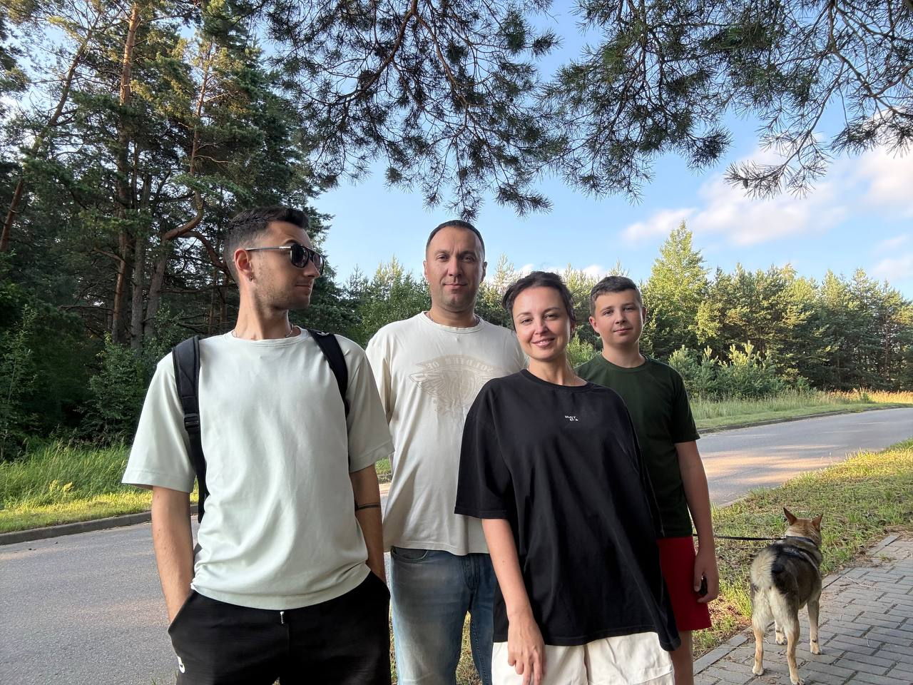
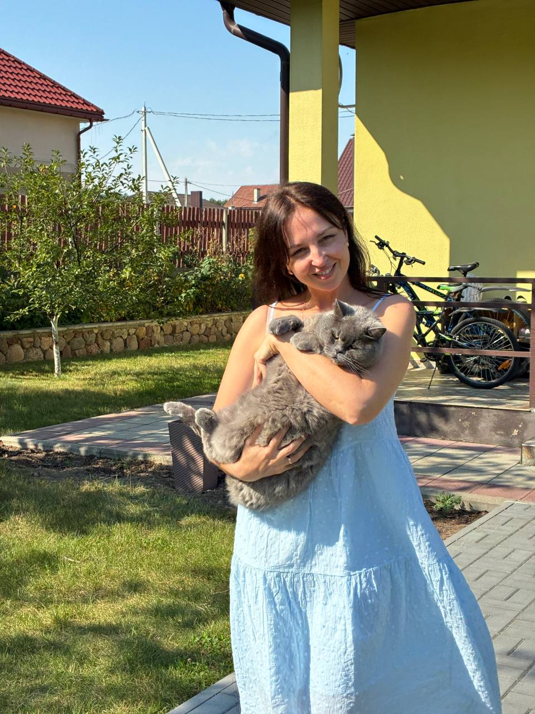
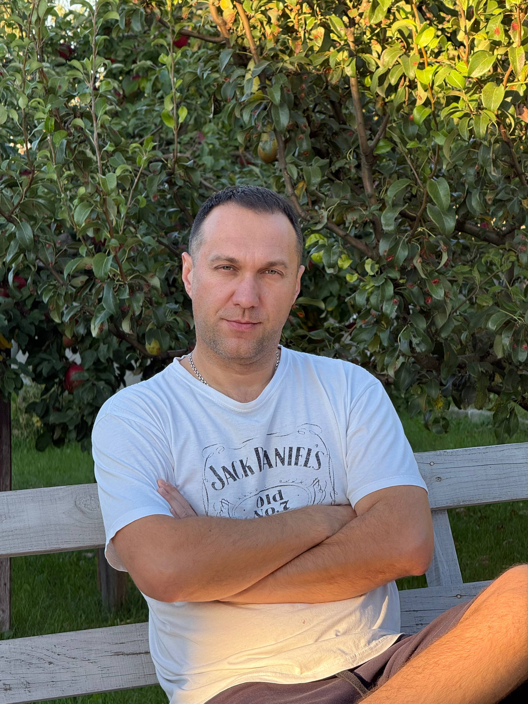
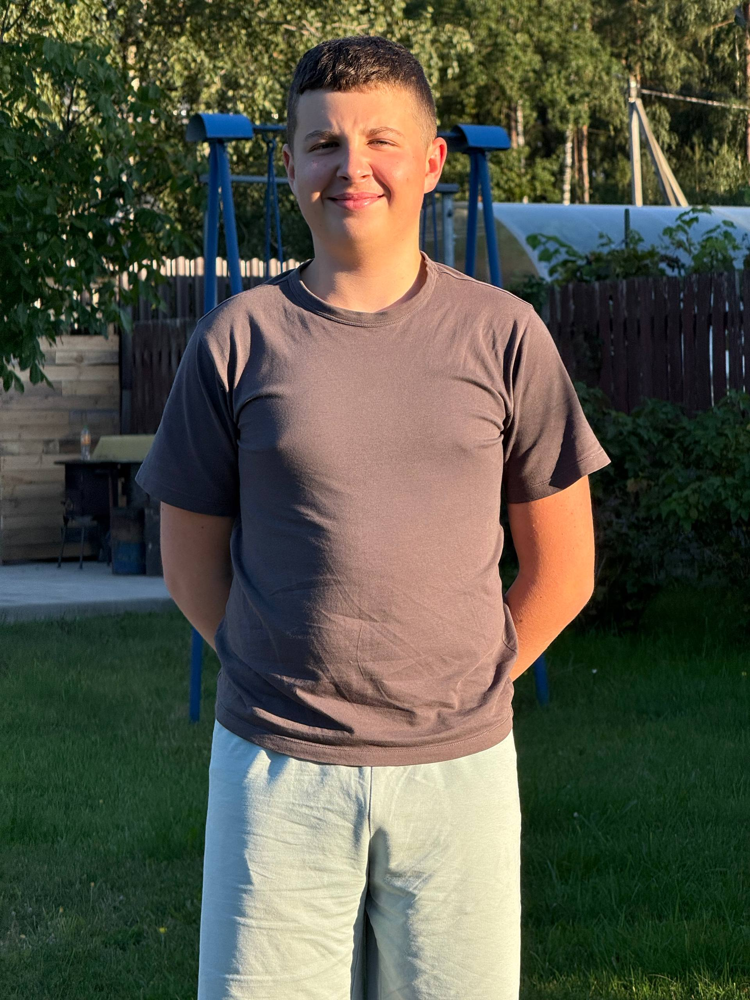

Самые близкие мне люди

Здесь я расскажу немного о своей семье и людях, которые занимают важное место в моей жизни
Мама

Моей маме 43 года. Для нашей семьи она — человек, который создаёт особую атмосферу тепла и уюта дома. Она очень милая, добрая и обаятельная, хотя иногда бывает немного стеснительной. С ней всегда приятно поговорить, посмеяться или просто провести время вместе. Мама любит гулять, петь и танцевать. Она много работает и всегда старается сделать всё для нашей семьи. Даже несмотря на занятость, она находит время для близких и умеет поддержать, когда это действительно нужно. Я очень ценю её за доброту, заботу и ту теплоту, которую она дарит нашей семье каждый день. Для меня мама — это не просто родной человек, а настоящий домашний уют и человек, рядом с которым всегда становится спокойнее и теплее.
Папа

Моему папе 46 лет. Он немного строгий, но за этой строгостью всегда чувствуется забота о семье и желание помочь. Папа очень рассудительный и образованный человек — у него два высших образования, и ему действительно интересно разбираться в самых разных вещах. Он умеет практически всё и всегда готов научить этому меня. Благодаря ему я многому научился и продолжаю узнавать новое. Папа не просто даёт советы, а старается объяснить, как правильно поступать и самостоятельно находить решения. Я очень ценю его за мудрость, поддержку и знания, которыми он делится со мной. Для меня папа — это человек, на которого всегда можно положиться и у которого всегда есть чему поучиться.
Младший брат Женя

Женя Моему младшему брату Жене 13 лет, он учится в школе и сейчас находится в том возрасте, когда иногда кажется, что ему просто лень думать, хотя на самом деле он вполне смышлёный парень. Просто не всегда хочется прикладывать усилия — думаю, со временем это пройдёт. Женя добрый, заботливый и смелый. Несмотря на свой возраст, он всегда готов прийти на помощь и выручить, если это необходимо. С ним можно посмеяться, подурачиться и просто хорошо провести время. Иногда он может быть настоящим маленьким врединой, но всё равно остаётся любимым младшим братом, на которого можно положиться.